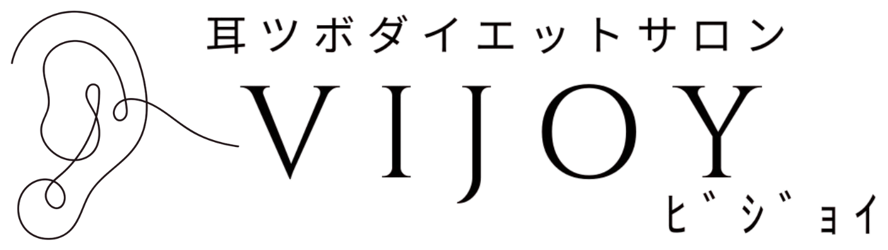
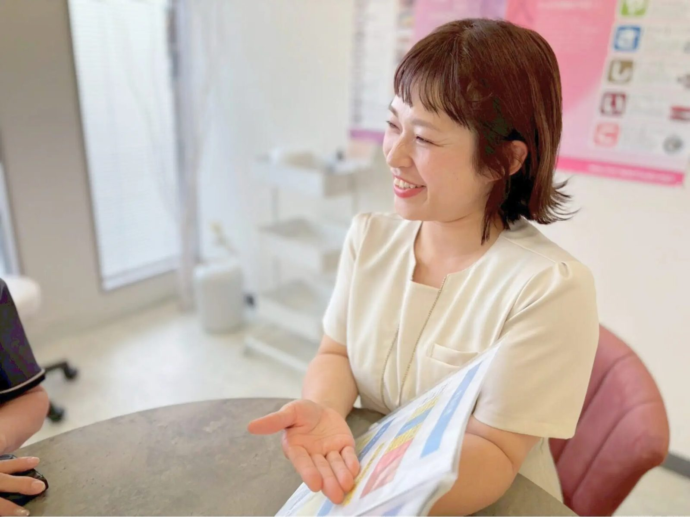
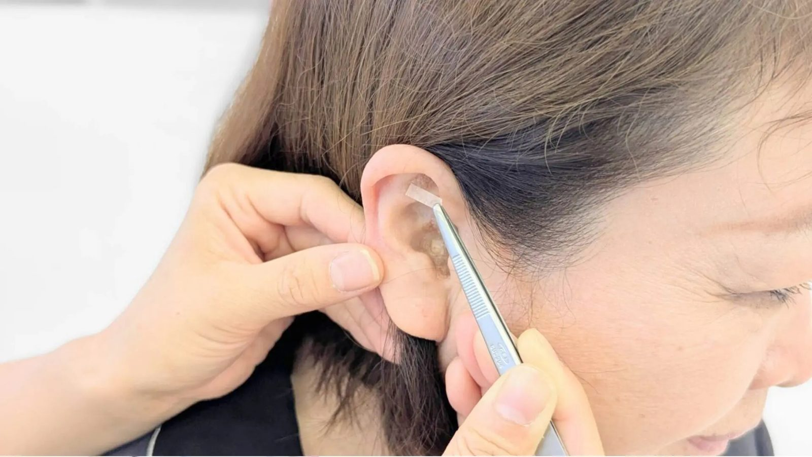
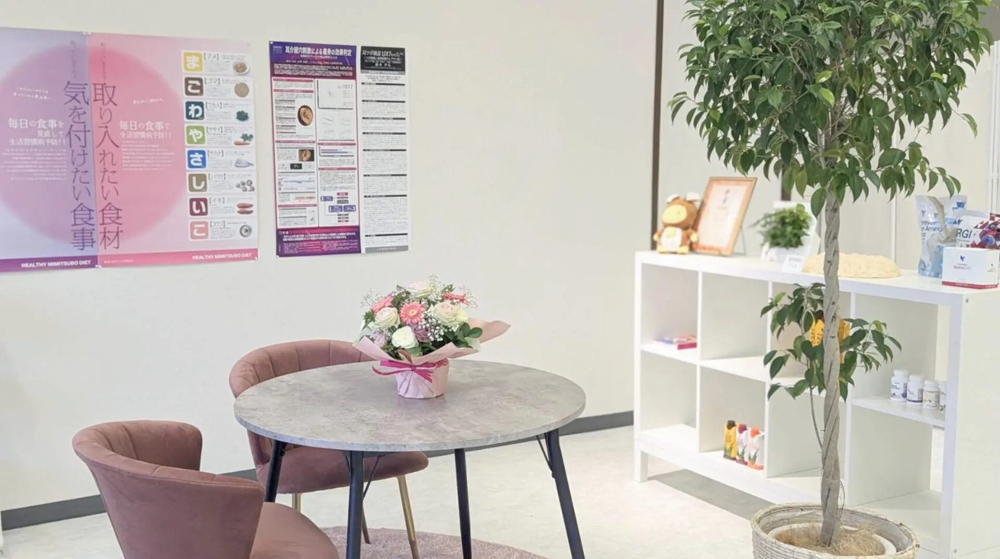
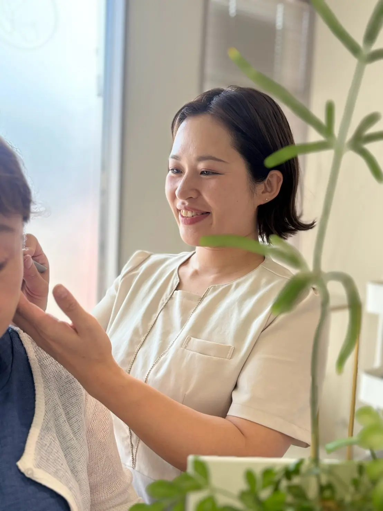
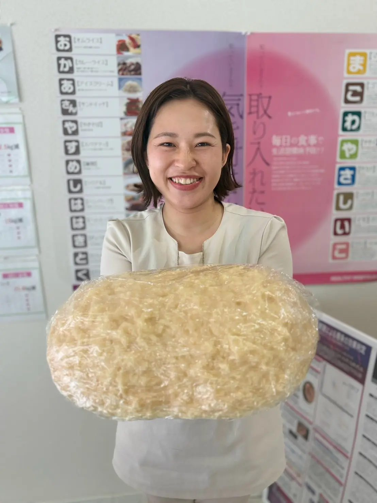

針なし・痛みなし・目立たない
使うのは小さな金粒と肌色のテープだけ。痛みはほとんどなく、貼っていることに気づかれにくいと好評です。金属アレルギーの方にはセラミック粒で対応します。


群馬県太田市の耳つぼダイエットサロン
美は健康から
耳ツボ × 食事の整え方で、オーナー自身も3ヶ月 -10kg。
LINEで初回カウンセリングを予約 友だち追加 → トーク画面から日時を送るだけ※減量幅には個人差があります
我慢して、頑張って、続かなくて。
それでも「変わりたい」気持ちはある。
その気持ちがあれば、大丈夫です。
VIJOYの考え方
VIJOYは、耳ツボと食事の整え方で、無理なく続くダイエットをサポートするサロンです。
厳しい運動も、過度な食事制限も必要ありません。耳のツボを刺激して食欲を自然に落ち着かせ、あなたの体質やライフスタイルに合わせて食事を整えていくことで、自然と変わっていく体を目指します。
食べないダイエットではありません。必要な栄養はしっかり摂ったうえで、食欲を落ち着かせながら整えていきます。
一人で抱え込まなくて大丈夫。お客様と二人三脚で進めていくダイエットです。
How it works
東洋医学では、耳には全身とつながるツボが集まっているとされています。そのツボを刺激しながら食事を整えていくことで、無理なく健康的に痩せることを目指す、歴史あるダイエット方法です。年齢・性別を問わず、幅広い方にご利用いただいています。
耳には、食欲を落ち着かせるといわれるツボや、自律神経を整えるといわれるツボがあります。耳のツボへ刺激を与え、ダイエットをサポートします。
「耳ツボを貼れば痩せる」というものではなく、食事や生活習慣の見直しと組み合わせて取り組むことがポイントです。

ダイエット＝食べない、ではありません。必要な栄養を確保しながら、食事の内容や食べ方を見直していきます。
そんな日々の疑問も、一緒に解決していきます。
一人でダイエットを続けるのは、意外と難しいもの。通っていただく間、体重や食生活の変化を確認しながら、その時の状態に合わせてサポートします。
うまくいかない時も、原因を一緒に考えて軌道修正。
「頑張っているのに結果が出ない」という状態を一人で抱え込まないことも、継続するための大切なポイントです。
目指すのは、一時的に体重を落とすことだけではありません。入口はダイエットですが、出口は健康です。
自分の食事や生活習慣を見直し、健康的な身体づくりにつなげていく。そのために、VIJOYでは一人ひとりに合わせたサポートを行っています。
Why VIJOY
使うのは小さな金粒と肌色のテープだけ。痛みはほとんどなく、貼っていることに気づかれにくいと好評です。金属アレルギーの方にはセラミック粒で対応します。
施術だけで終わりません。体質や食の好みに合わせた食事のお話と栄養アドバイスで、「痩せたあとも続けられる食べ方」が身につきます。

初回を除き施術は短時間。お仕事の合間や帰り道、お買い物ついでに立ち寄れます。太田駅から車で7分、駐車場完備。お子様連れも事前にご相談ください。

産後太りに悩み、運動が続かなかったオーナーが、耳ツボダイエットで3ヶ月-10kg。同じ悩みを通ってきたからこそ、寄り添ったサポートができます。
「本当に私でも痩せられる？」
まずはカウンセリングで、今の体と目標を一緒に確認しましょう。
Flow
お悩みや生活習慣をお聞きし、体重・体脂肪・BMIなどを測定。目標体重に合わせたプランをご提案します。
食欲を抑えたり、自律神経に働きかけるツボに金粒を貼ります。少ない食事量でも満足感を得られるようになります。
難しいことはありません。「減らす」のではなく「整える」。あなたの体質やライフスタイルに合わせて、必要な栄養をきちんと摂りながら健康的な身体をつくる食事のお話をします。
耳ツボダイエットはリバウンドが少ないダイエットです。ご卒業後も通っていただけるフォロー体制があるので安心です。

Owner
サロンオーナー 大山 早紀痩身カウンセラー／日本痩身医学協会会員
出産をきっかけに、育児のストレスと産後太りで気づけば10キロ以上増えていました。筋トレも有酸素運動も続かず、2年以上が経ち、職場のユニフォームはSサイズからLサイズに。寝付きが悪く、毎月原因不明の高熱を出すなど、体調もすぐれませんでした。
そんなときに出会ったのが耳ツボダイエット。「入口はダイエットでも出口は健康。運動しなくても痩せられる」という言葉に惹かれて始めたところ、3ヶ月で-10キロ。今では身体が軽く、寝起きもスッキリ。高熱を出すこともなくなりました。
耳ツボダイエットは、ただ痩せるだけでなく、健康な体を手に入れられるダイエットです。同じ悩みを抱える方に、安心安全な耳ツボダイエットをお届けします。
Salon Menu
ダイエットの期間や総額は、現在の体重・体脂肪と目標体重によって変わります。初回カウンセリングで、目標に応じたプランをご提案します。
耳ツボ施術 1回 ¥3,080（税込）
回数券のご用意もあります。詳しくはカウンセリングの際にご説明しますので、まずはお気軽にご相談ください。
FAQ
これまで多くのお客様を成功に導いてきた、実績のあるダイエット法です。耳のツボを刺激することで満腹感が得られるようになり、さらに健康維持に必要な栄養素を取り入れる食事指導を行いますので、安心してダイエットに取り組めます。
施術に針は使いませんので痛みはほとんどありません。とても小さい金粒を肌色のサージカルテープで固定するため、目立ちにくいです。金属アレルギーの方にはセラミック粒を使用しますのでご安心ください。
厳しい運動や過度な食事制限は必要ありません。耳ツボで食欲を落ち着かせながら、あなたの体質や好みに合わせた「続けられる食べ方」を一緒に整えていきます。必要な栄養を減らすのではなく、整えることを大切にしています。
お悩みや生活習慣などをお聞きし、現在の体重・体脂肪・BMIなどを測定します。初回のみ90〜120分ほどお時間をいただきます。基本的にお子様連れも歓迎ですが、初回カウンセリングは長時間になり退屈させてしまうため、初回のみご遠慮いただいています。
持病のある方、通院中・服薬中の方は、カウンセリングの際に必ずお知らせください。内容をうかがったうえで、無理のない進め方をご相談します。妊娠中・授乳中の方も、まずはご相談ください。
20代から70代以上まで幅広い年代の方が通われています。医師から痩せるように言われている方、リバウンドを繰り返している方、ジムやエステで効果が得られなかった方、産後太りを戻したい方、足腰が弱い方なども、身体に負担をかけずに取り組まれています。
期間や費用は個人差があり、現在の体重・体脂肪、目標体重によって変わります。カウンセリング時に目標体重に応じたプランをご提案します。
Reservation
友だち追加後、トーク画面に「カウンセリング希望」とご希望の日時を送るだけ。ご質問だけのメッセージも歓迎です。
LINEで初回カウンセリングを予約 営業時間 10:00〜19:00（日祝定休）お電話でのご予約も承ります
0276-58-5272 「LPを見た」とお伝えくださいAccess